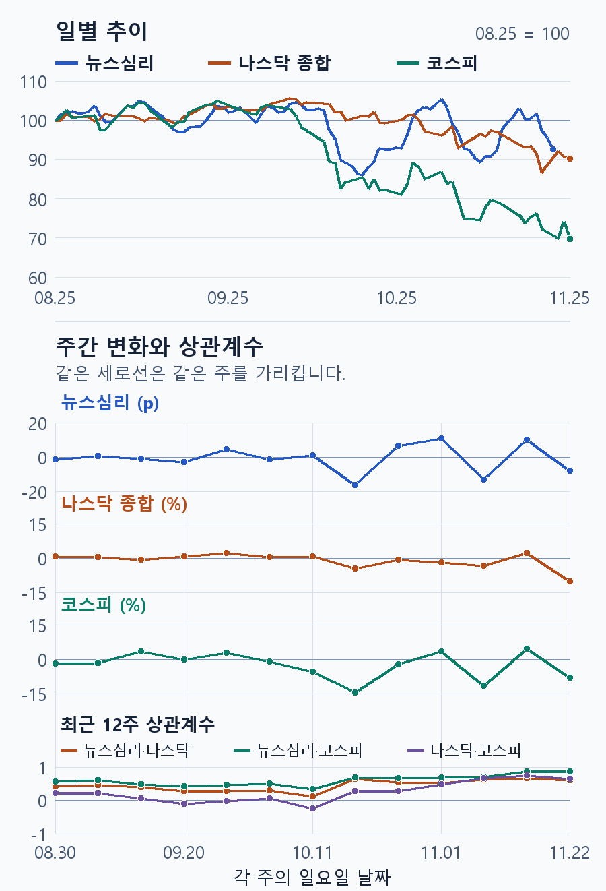
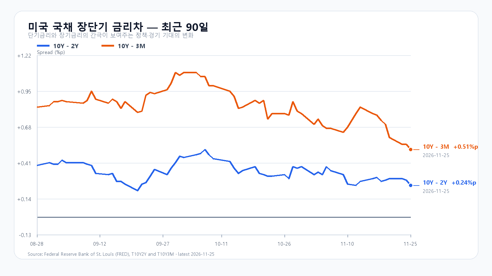

코스피가 4,697.51까지 밀려 전날 급등분을 모두 반납했다. 서울 장이 끝난 뒤 뉴욕에서도 반도체주가 다시 하락했지만, 저점에서는 낙폭을 상당 부분 만회했다. 오늘 코스피가 4,700선을 되찾더라도 전날 저점 4,672.55를 지키고 외국인 매도가 줄어야 반등이 이어질 수 있다. 한국은행의 금리 결정 뒤 원화와 대형 반도체주가 함께 움직이는지도 볼 대목이다. 연합뉴스 마감 · 미국 증시 마감
뉴욕 반도체주, 장중 저점에서 낙폭 줄여
25일 미국 정규장에서 SOXX는 장중 한때 8.12% 내렸다가 0.50% 하락으로 마쳤다. 엔비디아는 3.91%, 마이크론은 4.53% 내렸고, 나스닥종합 하락률은 0.62%였다. 서울 증시가 전날 반영한 SOXX 8.27% 급락은 미국의 24일 거래에서 나왔다. 오늘 개장에 새로 들어오는 신호는 그 뒤의 추가 하락과 장중 저점에서의 회복이다. SOXX 일봉 · 미국 증시 마감
미국 관세 제안에는 메모리 반도체 예외가 담겼다
미국 무역대표부는 한국산 제품에 기존 관세를 고려해 최대 15%를 적용하는 방안을 제안했다. 협의 결과가 충분하지 않을 때는 최대 25%를 검토하는 대안도 담았다. 조사 관련 보도는 전날 서울장에서 이미 나왔고, 공개된 제안서에는 메모리 집적회로가 예외 목록에 들어 있다. 제안이 확정되기까지 수출주 심리가 흔들릴 수 있다. 국내 반도체주의 당일 방향은 미국 동종주의 추가 하락과 외국인 매도 규모에 더 민감할 것으로 본다. 미 무역대표부 발표 · 한국 품목 별표
| 항목 | 값 | 원천 기준 시각 |
|---|---|---|
| KOSPI 전일 종가 | 4,697.51 | 2026-11-25T15:30:00+09:00 |
| KODEX 전일 종가 | 45,430원 | 2026-11-25T15:30:00+09:00 |
| USD/KRW 하나은행 고시 | 1,345.50원 | 2026-11-26T07:44:36+09:00 |
| NQF 최근 거래 | 26,017.25 | 2026-11-26T08:01:42+09:00 |
| ESF 최근 거래 | 7,187.50 | 2026-11-26T08:01:44+09:00 |
| BZF 최근 거래 | 90.82 | 2026-11-26T06:59:56+09:00 |
| CLF 최근 거래 | 84.07 | 2026-11-26T08:01:25+09:00 |
국내 뉴스심리와 경기선행지수
- 한국은행 뉴스심리지수 91.07 · 2026-11-22 관측 · 주간 공표 · 7일 전보다 8.02포인트 하락 출처
- 뉴스심리지수 3개월 평균 100.76 · 2026-10까지 3개월 · 일별 지수의 월평균 사용 · 한 달 전 3개월 평균보다 1.51포인트 하락 출처
- 경기선행종합지수 순환변동치 104.1 · 2026-09 기준 · 전월보다 0.1포인트 하락 출처

세 지표는 2026.08.25 기준으로 100에서 시작합니다. 뉴스심리 최신 관측치는 11.22 91.07입니다. 최신 정규장 종가는 나스닥 종합 11.25 23,585.80, 코스피 11.25 4,697.51입니다.
한 주는 월요일부터 일요일까지입니다. 뉴스심리는 일요일 지수에서 전주 일요일 지수를 뺀 값, 주가는 그 주 마지막 거래일 종가의 전주 대비 수익률을 씁니다.
각 날짜의 피어슨 상관계수는 그 주까지의 최근 12주를 같은 주끼리 짝지어 계산했습니다. 아래 표의 한 행에서 세 지표의 주간 변화와 세 쌍의 상관계수를 함께 읽을 수 있습니다.
날짜별 주간 변화와 상관계수
| 주 종료일 | 뉴스심리 변화 | 나스닥 수익률 | 코스피 수익률 | 뉴스심리·나스닥 | 뉴스심리·코스피 | 나스닥·코스피 |
|---|---|---|---|---|---|---|
| 2026.11.22 | -8.02p | -10.02% | -7.95% | +0.60 | +0.87 | +0.65 |
| 2026.11.15 | +10.04p | +2.27% | +4.56% | +0.66 | +0.86 | +0.74 |
| 2026.11.08 | -13.25p | -3.37% | -11.71% | +0.62 | +0.71 | +0.66 |
| 2026.11.01 | +10.78p | -2.00% | +3.25% | +0.53 | +0.68 | +0.49 |
| 2026.10.25 | +6.57p | -0.71% | -2.08% | +0.55 | +0.66 | +0.28 |
| 2026.10.18 | -16.46p | -4.48% | -14.46% | +0.64 | +0.68 | +0.28 |
| 2026.10.11 | +1.10p | +0.64% | -5.39% | +0.12 | +0.33 | -0.24 |
| 2026.10.04 | -1.19p | +0.45% | -1.09% | +0.29 | +0.51 | +0.06 |
| 2026.09.27 | +4.70p | +2.06% | +2.71% | +0.29 | +0.47 | -0.02 |
| 2026.09.20 | -2.79p | +0.72% | -0.23% | +0.28 | +0.42 | -0.11 |
| 2026.09.13 | -1.17p | -0.66% | +3.33% | +0.40 | +0.48 | +0.07 |
| 2026.09.06 | +0.61p | +0.40% | -1.50% | +0.45 | +0.60 | +0.23 |
| 2026.08.30 | -1.23p | +0.85% | -1.79% | +0.43 | +0.57 | +0.23 |
금통위 발표 뒤 원화와 외국인 수급을 함께 본다
한국은행은 10월 기준금리를 3.00%로 유지했다. 미국의 10월 개인소비지출 물가는 1년 전보다 3.8%, 식품과 에너지를 뺀 근원 물가는 3.3% 올랐다. 미국 3분기 성장률도 연율 3.4%에서 4.3%로 상향됐다. 미국의 물가 상승세가 이어지는 가운데 오늘 금통위가 국내 물가와 환율을 어떻게 평가하는지가 원화의 변수다. 미국 주식시장은 현지 26일 추수감사절로 휴장한다. 금통위 일정 · 10월 통화정책방향 · 미국 PCE · 미국 GDP · NYSE 일정
삼성증권의 25일 15시 40분 집계에서 외국인은 코스피 현물을 1조 9,085억원 순매도했고 코스피200 선물도 487억원 순매도했다. 삼성전자와 SK하이닉스는 정규장에서 각각 9.87%, 11.05% 하락했다. 지수가 오르더라도 두 종목이 개장 직후 저점을 다시 낮추고 비차익 프로그램 매도가 이어지면 반등 폭은 제한될 수 있다. 삼성증권 마감 시황
서버 수요가 늘어도 D램 현물은 약세
델은 이번 주 연간 AI 서버 매출 전망을 780억 달러로 높였다. 트렌드포스의 25일 현물 집계에서는 DDR5 16Gb가 0.11%, DDR4 16Gb가 0.64% 내렸다. 업체는 중국의 기업용 SSD 주문 감소와 공급 확대를 들어 내년 1분기 낸드 계약가격이 최대 5% 내릴 것으로 내다봤다. AI 서버 출하가 늘어도 범용 메모리 가격은 제품별 수급에 따라 다르게 움직인다. 델 실적 · D램 현물 · 낸드 전망
KODEX 레버리지, 전날 저가 44,895원이 첫 기준
KODEX 레버리지는 45,430원에 마쳤다. 44,895원을 지키면서 45,430원을 회복하면 전날 고가 48,665원까지 반등할 여지가 생긴다. 코스피 종가 기본 범위는 4,600~4,810이다. 4,810 위에서 외국인과 프로그램이 함께 순매수하면 4,970까지 열어 둔다. 4,600을 밑돌고 두 수급이 함께 순매도면 4,440까지 밀릴 수 있다. KODEX 일봉 · 코스피·KODEX 투자전략
25일 미국 국채 10년물 금리는 6bp 내린 4.85%, 2년물은 2bp 내린 4.61%였다. 장기물이 더 크게 하락하면서 10년과 2년 금리차는 0.24%p로 좁아졌다. 미 재무부
